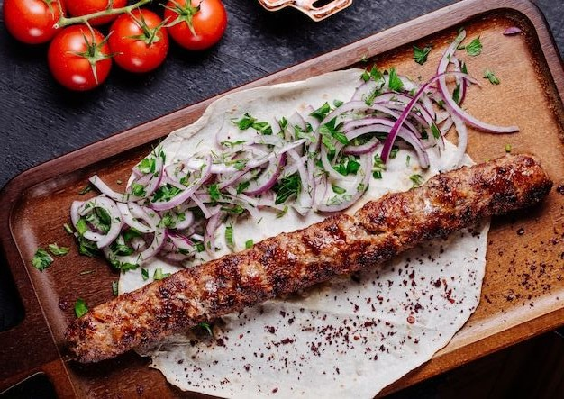
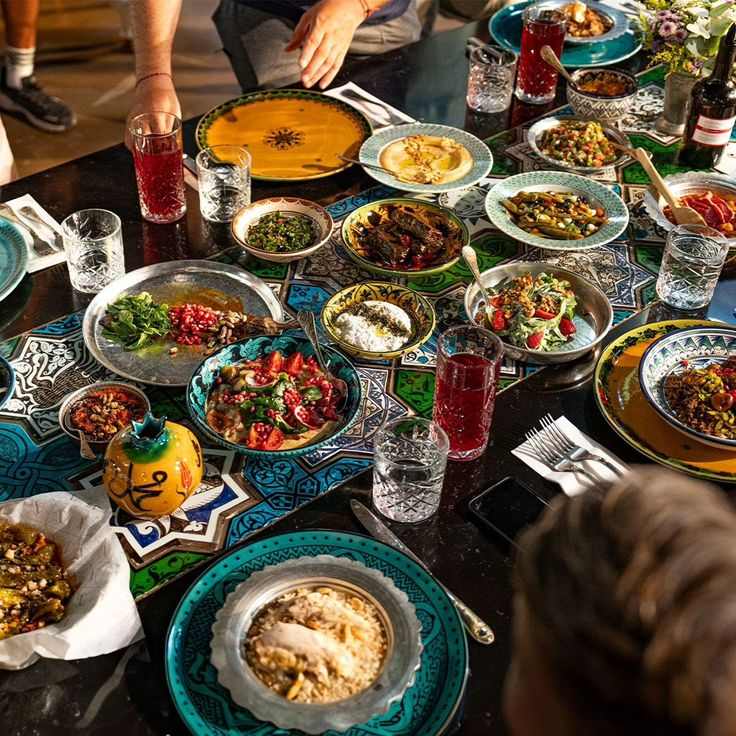
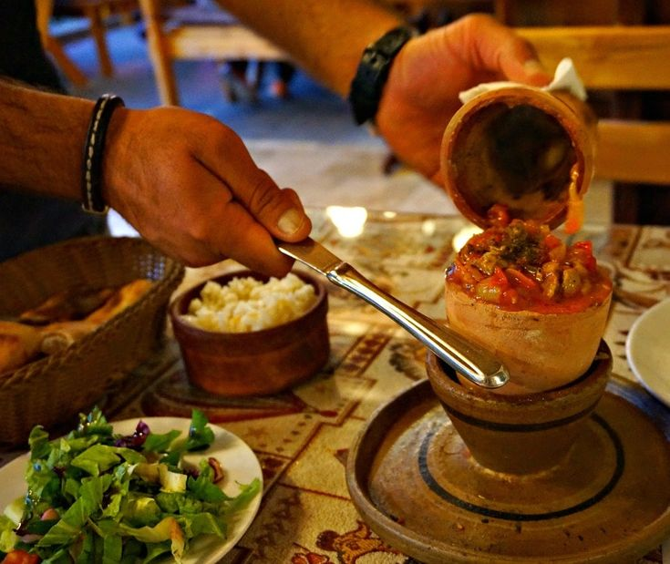

Hangi Şehirde Ne Yenir?
İstanbul
Tarihi Sultanahmet Köftecisi
Türk mutfağının geleneksel lezzetleri arasında bulunan Sultanahmet köftesi, piyaz eşliğinde ikram ediliyor, yiyenler ise tadına doyamıyor.
Adres: Alemdar Mahallesi, Divan Yolu Caddesi, No:12 İstanbul, Türkiye
Takanik Balık
Eminönü'nde balık ekmek yemeden İstanbul'dan ayrılmayın. Salaş mekanlardan hoşlanan biriyseniz, Sarıyer’deki Takabik Balık’ı mutlaka görmelisiniz.
Adres: Köybaşı Caddesi, No: 155, Yeniköy Sarıyer, İstanbul
Konya

Halk Etliekmek
Konya etliekmeği, Konya böreği, Konya furun kebabı ve Konya’ya özgü fırında pişirilen tüm etliekmek ve börek çeşitlerini bulabileceğiniz, iki şubesi olan bir etliekmekçi. Özellikle de küflü peynirli ve bıçak arası etli Recai böreği çok seviliyor.
Adres:Şemsitebrizi, Şerafettin Cd. 38/A, 42060 Karatay
Lokanta Kabakçı Ali
Etli ekmek ve fırın kebabtan sonra en meşhur Konya lezzetidir Tirit Kebabı. İskender gibi pidenin üzerine yoğurt, et ya da köfte, domates, biber, soğan konulup üzerine tereyağ gezdiriyorlar.
Adres: Devri Cedid Mahallesi, Müneccimbaşı Sk. 18/A, 42060 Selçuklu
Bursa
Uludağ Kebapçısı Cemal Cemil Usta
1964 yılından beri hizmet veren Uludağ Kebapçısı, aynı zamanda Tasteatlas'ın dünyanın en iyi restoranları listesinde 46. sırayı almıştır. Bölge halkı tarafından çok sevilen bu mekan, lezzetli kebaplarıyla mutlaka uğramanız gereken yerlerden biridir.
Adres: Ulu Mahalle, Uluyol Caddesi, 16. Şirin Sk. No:12, 16220 Osmangazi/Bursa
Zennup 1844
Bursa Nilüfer'de şubeleri bulunan bu mekan, kapıdan girdiğiniz ilk anda sizi samimi bir dekorasyonla karşılıyor. Menüde ise geleneksel Anadolu ve Türk mutfağının en özel seçkilerine yer veriliyor.
Adres:blok 76, 1/15, Eker Meydanı Avm A, 16040 Ni̇lüfer/Bursa
Kapadokya
Reserved Restaurant & Lounge
Kapadokya'nın tarihi dokusunu sonuna kadar hissedebileceğiniz bu restoran, hem kalabalık gruplara, hem de çiftlere hizmet veriyor. Uzun uzun kurulan sofraların yanı sıra mezeleriyle de ön plana çıkıyor.
Adres: Aşağı, Adnan Menderes Cd. no 50 -1, 50240 Uçhisar/Nevşehir
Barbarian Medieval Tavern
İç mekanda ahşabın yaygın olarak kullanıldığı bu mekan, rustik havasıyla kapıdan girdiğiniz ilk anda sizi büyülüyor. Tavuk budu lolipop, ızgara bıldırcın şiş, brisket sandviç, özgün lezzetler arasında sunuluyor.
Adres:Temenni, Bey Sk. No:4, 50400 Ürgüp/Nevşehir